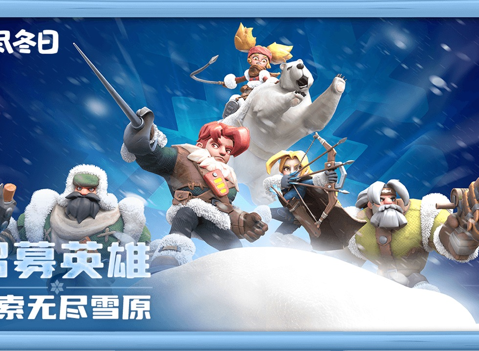
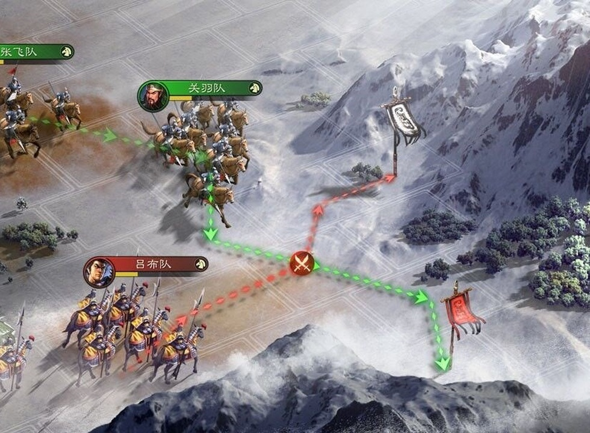
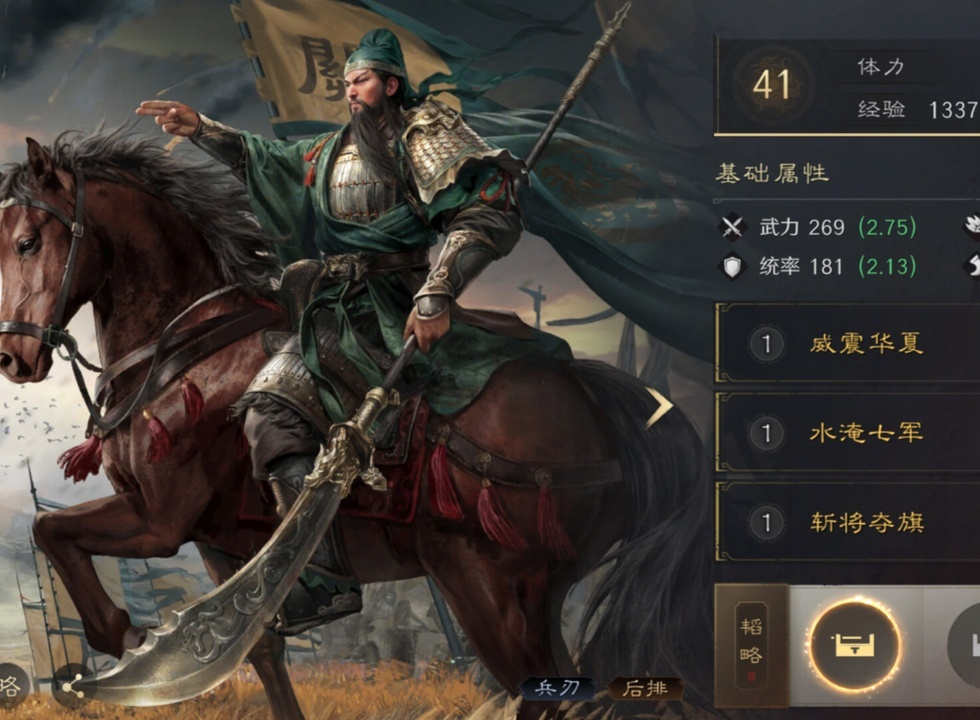

6 月游戏榜单揭秘！《无尽冬日》竟把《王者荣耀》
各位主机党还在为暑期档那几款新动作RPG犯纠结？手柄先放一放，咱们今天盘一盘手机端那些闷声发大财的“现金牛”。刚过去的六月份，一款上线快三年的SLG游戏非但没按行业规律步入暮年，反而直接把《王者荣耀》从全球收入榜冠军的位置上挤了下去。这事搁三年前谁敢想？运营手段堆到了极致，还是玩法层面真有降维打击的硬实力？看着《无尽冬日》那串夸张的数据，老玩家们手里的米袋子怕都紧了一下。

一款游戏能连续两年保持这种暴涨姿态，确实让人重新琢磨SLG这个品类的底层逻辑。Sensor Tower和点点数据反馈回来，六月《无尽冬日》iOS单平台流水冲到4540万美元，全平台估算大概9.2亿人民币，环比上涨39%。更吓人的是全球吸金能力，约9.7亿元的收入不仅稳居全球手游收入榜第二，还在6月直接超了《王者荣耀》登顶全球第一，而且是前十名里唯一还在高速增长的产品。但话说回来，靠强运营驱动而非玩法迭代堆出来的增长，步子总觉得迈得有点虚。见过太多游戏靠活动把流水顶上去，运营节奏一松，数字立马摔得难看，持续性真得打个问号。

反观另外两家老牌劲旅，情况可谓一边倒。《率土之滨》和《三国志战略版》这俩赛季制SLG的老大哥，六月数据透着一股英雄迟暮的味儿。《率土之滨》iOS流水只有408万美元，全平台估算8337万人民币，比五月跌了31%，下载量虽然翻了快三倍达到9.58万，但人来了钱没来，新用户进服看见满屏老油条和复杂机制，直接被劝退。咱们这些被生活压得喘不过气、只想找个游戏放松的国内玩家，花时间去研究一个运营了十年的老游戏的门槛，实在太奢侈了。《三国志战略版》也没好到哪去，iOS流水488万美元，全平台近9965万人民币，降了21%。虽说七月有新剧本和追光电影联动的大招憋着，但光靠联动《我的世界》或者搞个蹴鞠活动把人忽悠进来，留不住核心付费人群，拉新容易转化难的困局，确实让人觉得惋惜。
榜单中游的产品则面临更严峻的生存考验。《奔奔王国》属于典型的“墙内开花墙外香”，六月iOS流水522万美元，全平台约1.06亿，微涨2.4%，下载量翻了近三倍冲到14万，国内就是不温不火。海外版《Kingshot》5月收入能冲上9160万美元，赚得盆满钵满。这其实暴露了国内SLG市场的一个尴尬现状——格局固化得太厉害。六月蹭上阿根廷国家队官方合作的热度，搞了个“你守住球门，我守住城堡”的世界杯主题活动，确实拉了一波眼球，但这种靠外部IP输血的方式，终究治标不治本。本土新入局的团队想在这个被头部几款产品焊死的赛道里撕开口子，难度可想而知。
最后两家产品虽然数据平平，却也代表了行业的某种常态。《三国：冰河时代》六月iOS流水578万美元，全平台约1.17亿，降幅只有0.5%，看着稳如老狗，下载量才10万出头。这游戏在小程序端确实能打，微信小游戏畅销榜排第四，买量消耗月度第二，一到App端就差点意思。六月上旬搞的世界杯蹴鞠小游戏，蹭了热度又没完全蹭上，新剧本上线也是波澜不惊。这种温水煮青蛙式的“稳中有升”，掩盖的可能是核心玩法创新的长期缺位。历史上多少SLG产品就是在这种看似安全的节奏里慢慢失去爆发力，等回过神来，长尾效应早就失效了。

六月榜单看下来，头部效应已经夸张到令人窒息。第1名《无尽冬日》9.2亿，第2名三谋2.44亿，剩下的全在1亿上下挣扎，第1名是最后一名的11倍。靠“好不好玩”之外的东西撑起来的繁荣，总觉得少了点让人心安的底气。七月随着《三国志战略版》新剧本、《三国：谋定天下》持续发力以及暑期档增量用户入场，SLG流水大概率会再创新高。不过，当第一名的秘密武器变成了运营而不是玩法的降维打击，这赛道的生命力还能燃多久，或许才是整个行业该焦虑的事。
关于我们
📱 公众号名称：三天游戏
✍️ 作者：曾三天
扫码关注公众号，获取每日最新资讯

商务合作与版权
商务合作 / 内容投稿 / 品牌推广
请关注公众号「三天游戏」后台留言联系
版权声明：本文由作者整理，转载需注明出处。